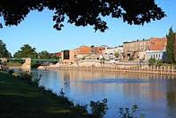

En un día caluroso de Enero, estaba James MacPherson sentado en su oficina en Chatham, Ontario-Canadá. Era la misma oficina que su padre había utilizado por más de 35 años hasta su retiro hace tres años. James, director ejecutivo (CEO) de Recreational Living Limited (RL), estaba tratando de decidir dónde debía trasladar las operaciones de fabricación artesanal de canoas y embarcaciones de ocio de su empresa. Después de casi 40 años en la localidad de Chatham, el traslado era necesario por dos razones. En primer lugar, un barrio residencial se había desarrollado 10 años antes que RL en un área cercana a la planta y desde entonces, había una relación infeliz cada vez mayor entre la comunidad vecina y el negocio. Las quejas se habían centrado en torno a un olor muy desagradable que los vecinos afirmaban provenía de la planta. En segundo lugar, la planta existente estaba cerca de su capacidad máxima y no había espacio para la expansión.
James había reducido sus opciones a tres nuevos lugares, sólo uno de los cuales estaba en la localidad de Chatham. Odiaba la idea de abandonar el sitio donde RL había comenzado sus operaciones y había crecido en las últimas cuatro décadas. Chatham, con una población de más de 100.000 habitantes, estaba ubicada al suroeste de Ontario, tenía fácil acceso a la autopista 401 (una autopista principal) y proximidad a tres cruces fronterizos importantes con Estados Unidos a una hora de viaje. Las raíces de James eran profundas en esta ciudad. Su abuelo había sido alcalde de Chatham y la idea de mudarse a otro lugar era difícil de pensar. Pero James tenía que hacer algo. Las quejas de los residentes de Chatham eran cada vez más fuertes, y el potencial negocio perdido de no expandirse era preocupante.